ജയകുമാർ നായർ തയ്യാറാക്കിയത്
reference:
Operating System Concepts, Ninth Edition by Abraham Silberschatz, Peter Baer Galvin and Greg Gagne
introduction
 # what operating systems do
= a computer system can be divided roughly into four components
- hardware
- operating system
- application programs
- users
= operating system manages computer hardware, system programs, application programs and users
= an operating system acts as an intermediary between the user of a computer and the computer hardware
= operating system is the program running at all times on the computer called the kernel
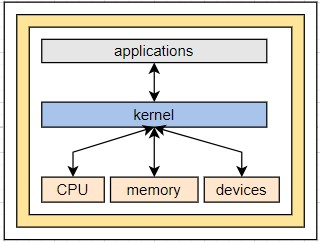
= 2 other types of programs along with the kernel are
- system programs (associated with the operating system but are not necessarily part of the kernel)
- application programs (not associated with the operation of the system)
= mobile operating systems often includes a middleware (set of software frameworks provides services to application developers)
# computer-system organization
# what operating systems do
= a computer system can be divided roughly into four components
- hardware
- operating system
- application programs
- users
= operating system manages computer hardware, system programs, application programs and users
= an operating system acts as an intermediary between the user of a computer and the computer hardware
= operating system is the program running at all times on the computer called the kernel
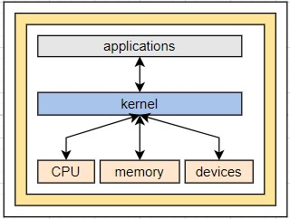
= 2 other types of programs along with the kernel are
- system programs (associated with the operating system but are not necessarily part of the kernel)
- application programs (not associated with the operation of the system)
= mobile operating systems often includes a middleware (set of software frameworks provides services to application developers)
# computer-system organization
 = computer-system components
- a modern computer system consists of one or more CPUs and a number of device controllers connected through a common bus that provide access to shared memory
- each device controller is in charge of a specific type of device
- CPUs and device controllers can execute in parallel competing for memory cycles
- memory controller synchronizes access to the memory
= computer-system starting
- when a computer powered up or reboot the initial program to execute is bootstrap program
- typically this program is stored with in the computer hardware in ROM - readonly memory or firmware(EEPROM - electronically erasable programmable memory)
- the bootstrap program must locate the operating system kernel and load into memory
- the kernel starts providing services to the system and the users, some services are provided by few external programs
- these external programs are called system programs which is loaded to memory at boot time to become system process or daemons(in unix first daemon is 'init')
= devices and CPU communication(events)
- events are occurred through interrupt mechanism from either the hardware or the software
- hardware may trigger an interrupt at any time by sending a signal to the CPUs usually by way of system bus
- software may trigger an interrupt at any time by executing a special operation called a system call(monitor call)
- when a CPU is interrupted, it stops the current operation and transfers to a fixed location
- that fixed location contains the starting address of service routine for the interrupt
- on completion, the CPU resumes the interrupted computation
= computer-system components
- a modern computer system consists of one or more CPUs and a number of device controllers connected through a common bus that provide access to shared memory
- each device controller is in charge of a specific type of device
- CPUs and device controllers can execute in parallel competing for memory cycles
- memory controller synchronizes access to the memory
= computer-system starting
- when a computer powered up or reboot the initial program to execute is bootstrap program
- typically this program is stored with in the computer hardware in ROM - readonly memory or firmware(EEPROM - electronically erasable programmable memory)
- the bootstrap program must locate the operating system kernel and load into memory
- the kernel starts providing services to the system and the users, some services are provided by few external programs
- these external programs are called system programs which is loaded to memory at boot time to become system process or daemons(in unix first daemon is 'init')
= devices and CPU communication(events)
- events are occurred through interrupt mechanism from either the hardware or the software
- hardware may trigger an interrupt at any time by sending a signal to the CPUs usually by way of system bus
- software may trigger an interrupt at any time by executing a special operation called a system call(monitor call)
- when a CPU is interrupted, it stops the current operation and transfers to a fixed location
- that fixed location contains the starting address of service routine for the interrupt
- on completion, the CPU resumes the interrupted computation
 = storage structure
= storage structure
 - all forms of memory provide an array of bytes and every byte has an address
- main memory mainly implemented in a semiconductor technology called DRAM-dynamic random access memory is called RAM
- SSD, solid state drive is a non-volatile memory and stores data in a DRAM array during normal operation but also contains a hidden magnetic hard disk and a battery
- when external power is interrupted the SSD's controller will copy data from RAM to disk so its becomes non-volatile. when the external power is restored controller copies the data back to RAM
- another non-volatile form is flash memory which doesn't require power to retain its contents and its a variant of EEPROM-electrically erasable programmable read-only memory
- another non-volatile form is NVRAM which is DRAM with battery power
= i/o structure
- all forms of memory provide an array of bytes and every byte has an address
- main memory mainly implemented in a semiconductor technology called DRAM-dynamic random access memory is called RAM
- SSD, solid state drive is a non-volatile memory and stores data in a DRAM array during normal operation but also contains a hidden magnetic hard disk and a battery
- when external power is interrupted the SSD's controller will copy data from RAM to disk so its becomes non-volatile. when the external power is restored controller copies the data back to RAM
- another non-volatile form is flash memory which doesn't require power to retain its contents and its a variant of EEPROM-electrically erasable programmable read-only memory
- another non-volatile form is NVRAM which is DRAM with battery power
= i/o structure
 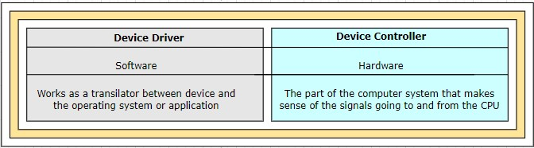
- every operating system have a device driver for each device controller
- device driver is a software program with which the device controller interacts with the operating system
- device controller is a hardware unit attached to the I/O bus and works like an interface between a device and a device driver
- device controller maintains some local buffer storage and a set of special purpose registers and it is responsible for moving the data between the peripheral devices and its local buffer storage
- each device controller is in charge of a specific type of device
- SCSI-small computer systems interface controller can attach to seven or more devices
- how data movement happens (small amount of data movement)
. Execution cycle finds a user input instruction
. CPU stops the current user process execution and starting the I/O interrupt processing (identify the interrupt routine address from the interrupt vector)
. interrupted device driver loads instructions to appropriate registers on the device controller
. device controller examines the contents of these registers to determine what action to take(like read)
. device controller starts the transfer of data from the I/O device to its local buffer
. device controller informs the device driver via an interrupt that it has finished the operation
. device driver then returns control to the operating system and load data to memory
- how data movement happens (bulk data movement)
. device controller populate local buffers and transfers bulk of data to and from directly to memory
. this movement does not involve CPU and its called direct memory access(DMA)
# computer-system architecture
= execution of instructions
- Von Neumann architecture was first published by John von Neumann in 1945
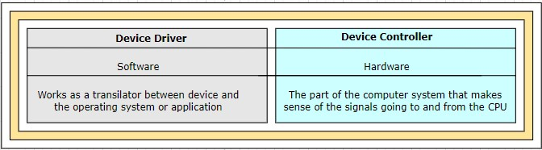
- every operating system have a device driver for each device controller
- device driver is a software program with which the device controller interacts with the operating system
- device controller is a hardware unit attached to the I/O bus and works like an interface between a device and a device driver
- device controller maintains some local buffer storage and a set of special purpose registers and it is responsible for moving the data between the peripheral devices and its local buffer storage
- each device controller is in charge of a specific type of device
- SCSI-small computer systems interface controller can attach to seven or more devices
- how data movement happens (small amount of data movement)
. Execution cycle finds a user input instruction
. CPU stops the current user process execution and starting the I/O interrupt processing (identify the interrupt routine address from the interrupt vector)
. interrupted device driver loads instructions to appropriate registers on the device controller
. device controller examines the contents of these registers to determine what action to take(like read)
. device controller starts the transfer of data from the I/O device to its local buffer
. device controller informs the device driver via an interrupt that it has finished the operation
. device driver then returns control to the operating system and load data to memory
- how data movement happens (bulk data movement)
. device controller populate local buffers and transfers bulk of data to and from directly to memory
. this movement does not involve CPU and its called direct memory access(DMA)
# computer-system architecture
= execution of instructions
- Von Neumann architecture was first published by John von Neumann in 1945
 - it is based on the stored-program computer concept, where instruction data and program data are stored in the same memory
- interaction with CPU and memory unit is achieved through load and store instructions to specific memory addresses
- load - from main memory to internal registers within the CPU
- store - from internal registers to main memory
- need arises, CPUs explicitly loads instructions from main memory for execution
- instructions are processed via fetch-execute cycle
- CPU can load instruction only from main memory(RAM-random access memory)
- it is based on the stored-program computer concept, where instruction data and program data are stored in the same memory
- interaction with CPU and memory unit is achieved through load and store instructions to specific memory addresses
- load - from main memory to internal registers within the CPU
- store - from internal registers to main memory
- need arises, CPUs explicitly loads instructions from main memory for execution
- instructions are processed via fetch-execute cycle
- CPU can load instruction only from main memory(RAM-random access memory)
 = single processor systems
- one main general purpose processor
- may have many special purpose processor(disk, keyboard and graphics controllers)
= multi processor systems
- 2 or more processors in close communication sharing the computer bus, clock memory and I/O devices also known as parallel systems or multicore systems
- three main advantages are
. increased throughput, speed up ration if N processor is not N but near
. economy of scale, less cost because they share many components(peripherals,storage and power supplies)
. increased reliability, failure of one processor will not halt the system, only slow down thus controlling failing altogether
- 2 types of multiprocessing systems are currently in use
. asymmetric multiprocessing: boss-worker relationship, OS tasks are carried only by the master processor which will allocate work to the worker processor. Sun Microsystems SunOS version 4
. symmetric multiprocessing(SMP): peer relationship, all the processors can take part in the OS tasks based on availability. Sun Microsystems SunOS version 5
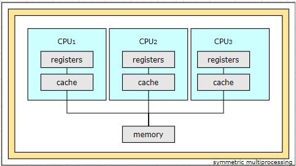
. differentiator for asymmetric/symmetric multiprocessing systems are either hardware or software. software can be written to allow only one boss and multiple workers
- terms used for reliability of computer system
. graceful degradation, ability to provide service proportional to the level of surviving hardware
. fault tolerant, hardware and software duplication to ensure continued operation despite failure
- multiprocessing can cause a system to change its memory access model
. UMA-uniform memory access, access to any RAM from any CPU takes same amount of time
. NUMA-non-uniform memory access, access to some part of RAM may takes long amount of time. OS can minimize the NUMA penalty through resource management
- multicore, including multiple computing cores in a single chip
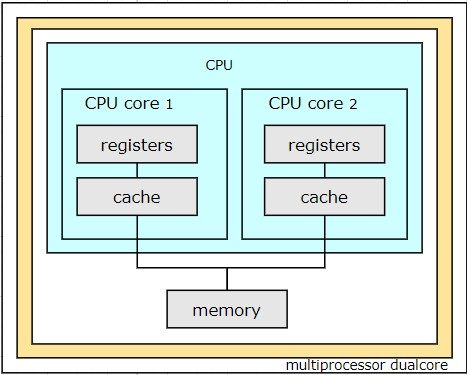
. all multicore systems are multiprocessor systems
- blade servers, multiple processor boards and I/O boards and networking boards are placed in the same chassis
. each blade processor boards boots independently and runs its own OS
= clustered systems
- composed of multiple individual systems or nodes or loosely coupled systems
- generally clustered computers share storage and are closely linked via LAN or a faster interconnect such as InfiniBand
- a layer of cluster software runs on the cluster nodes
- each nodes can monitor one or more of the others(over LAN)
- if monitored machine fails, the monitoring machine can take ownership of its storage and restart the applications that were running on the failed machine
- 2 types of clustered systems
. asymmetric clustering, one hot-standby machine will monitor the active server and in case of failure it becomes the active server
. symmetric clustering, 2 or more hosts are running applications and are monitoring each other
- application must written to take advantage of the cluster, involving the technique known as parallelization
. parallelization divides a program into separate components and run in parallel on individual computers in a cluster
. once each node solves its portion, the results from all the nodes are combined into a final solution
- other forms clusters are
. parallel clusters
. clustering over a WAN-wide area network
- parallel clusters allow multiple hosts to access the same data on shared storage
- normal OS won't support simultaneous data access by multiple hosts a special software required for achieving the same. Oracle Real Application Cluster is designed to run on a parallel cluster
- every machine runs Oracle and a layer of software tracks access to the shared disk
- to avoid conflict on data DLM-distributed lock manager is included in cluster technology
- SAN-storage area network technology allows many systems to attach to a pool of storage
- cluster software can assign the application to run on any host that is attached to the SAN
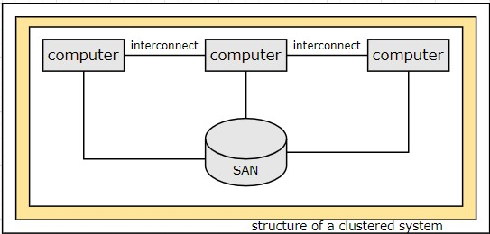
# operating-system structure
= OS provides an environment within which programs are executed
= lots of jobs will kept initially on the disk in the job pool
= job is a collection of program + input data + control instructions
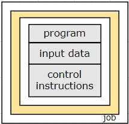
= operating system will bring subset of jobs from job pool to memory since memory is small to accommodate all the jobs
= OS picks and begins to execute one of the job
= some of the types of operating systems
- multiprogramming
- multi tasking/time-sharing
- batch
- multiprocessing
- real-time
= what is multiprogramming
- CPU will continue to execute the job until finishes (non-preemptive) or the job request for some I/O operation
- main purpose of multiprogramming is to make sure that the CPU is always busy
- CPU will have one job at a time
= what is multitaksing or time-sharing
- multitaksing or time-sharing is an extension on multiprogramming
- every job will execute only for a predefined time or CPU scheduling
- CPU will execute a job until time slice reaches (preemptive) or the job request for some I/O operation then start executing the next one
- main purpose of multitasking or time sharing is to make sure that the CPU is always busy and improved response time for every job
- CPU will have one job at a time
- OS will ensure reasonable response time through
. swapping, processes swapped in and out of memory to disk
. virtual memory, a technique that allows the execution of program that is larger than physical memory size
. file system
. disk management
. protecting resources from inappropriate use
. job synchronization and communication
. handling deadlocks
= what is multiprocessing
- multi processor(CPU) systems
- any CPU will have one job at a time
# operating-system operations
= operating systems are interrupt driven
= events are always signaled by the occurrence of an interrupt or a trap
= trap is a software generated interrupt caused by an error(divide by zero) or by a specific request from a user program
= dual-mode and multimode operation
- a system should distinguish between the execution of operating system code and user defined code
- most popular approach is to provide hardware support
- 2 separate modes of operations are
. kernel mode (also called supervisor mode, system mode, privileged mode), 0 the mode bit
. user mode, 1 the mode bit
- a bit(mode bit) is added to the hardware to indicate the mode kernel(0) or user(1)
- with the mode bit we can distinguish between a task that is executed on behalf of the operating system or the user
- when a computer system is executing on behalf of the user application the system is in user mode
- user application requests a service from the operating system via a system call the system will transition to kernel mode
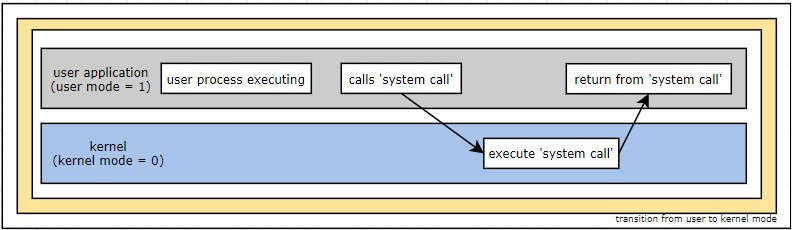
- privileged machine instructions, those machine instructions that may cause harm to OS
- dual-mode, only 2 modes(user mode and kernel mode). privileged machine instructions can execute only on kernel mode else treat it as illegal if on user mode. eg, controlling I/O devices
- multi-mode, more than 2 modes(CPU uses more than one bit). Intel 64 family of CPUs supports four privilege levels
= timer
- timer set to interrupt the CPU after a specified period of time
- period may be fixed(1/60 seconds) or variable value, simple technique is to initialize a counter with the amount of time that a program is allowed to run
- implementation by a fixed clock and a counter
- every time clock ticks the counter is decremented
- when the counter reaches 0 the interrupt occurs
- timer prevent a user program from running too long
# process management
= a program in execution is process or run time picture of a program is the process
= a process needs certain resources (CPU time, memory, files and I/O devices) to accomplish its task
= two type of processes are
- single threaded process has one program counter(PC)
- multi thread processes has multiple PCs
= process is a unit of work in a system, like centimeter is the unit of height
= OS is responsible for
- scheduling processes and threads on the CPU
- creating and deleting system and user processes
- suspending and resuming processes
- providing mechanisms for process synchronization and communication
# memory management
= main memory is a large array of bytes, each byte having its own address
= main memory is generally the only large storage device that the CPU is able to address and access directly
= CPU reads instructions from main memory during the instruction-fetch cycle
= CPU reads and writes data from main memory during the data-fetch cycle
= OS is responsible for
- keep track of which part of memory is currently being used and who is using them
- deciding which (part of) processes and data to move in and out of memory
- allocation and deallocating memory space as needed
# storage management
= provides a uniform, logical view of information storage
= defines a logical storage unit called 'file'
= maps these files onto physical media
= file-system management
- OS is responsible for
. creating and deleting files
. creating and deleting directories to organize files
. supporting the manipulation of files and directories
. mapping files onto secondary storage
. backing up files on stable storage media
= mass-storage management
- because main memory is small and volatile the computer system must provide secondary storage
- OS is responsible for
. free space management
. storage allocation
. disk scheduling
= caching
- information is normally kept in some storage system(such as main memory)
- the required information will take directly from cache, if its not available we use the information from the source putting a copy in to the cache
- performance of various levels of storage
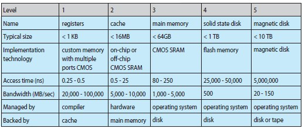
. migration of integer A from disk to register
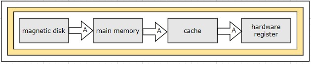
= I/O systems
- managing and hiding the peculiarities of specific hardware devices through I/O subsystem
- I/O subsystem consists of
. memory management components including buffering, caching and spooling
. general device-driver interface
. device-driver for specific hardware devices
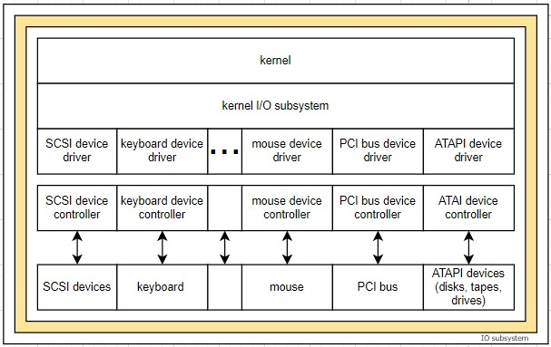
# protection and security
= a computer with multiple users and executing multiple process, then access to data needs to be regulated
= protection is any mechanism for controlling the access of processes or users of the resources defined by a computer system
# computing environments
= traditional computing
= mobile computing
= distributed systems
= client server computing
= peer-to-peer computing
= virtualization
= cloud computing
= real time embedded systems
= single processor systems
- one main general purpose processor
- may have many special purpose processor(disk, keyboard and graphics controllers)
= multi processor systems
- 2 or more processors in close communication sharing the computer bus, clock memory and I/O devices also known as parallel systems or multicore systems
- three main advantages are
. increased throughput, speed up ration if N processor is not N but near
. economy of scale, less cost because they share many components(peripherals,storage and power supplies)
. increased reliability, failure of one processor will not halt the system, only slow down thus controlling failing altogether
- 2 types of multiprocessing systems are currently in use
. asymmetric multiprocessing: boss-worker relationship, OS tasks are carried only by the master processor which will allocate work to the worker processor. Sun Microsystems SunOS version 4
. symmetric multiprocessing(SMP): peer relationship, all the processors can take part in the OS tasks based on availability. Sun Microsystems SunOS version 5
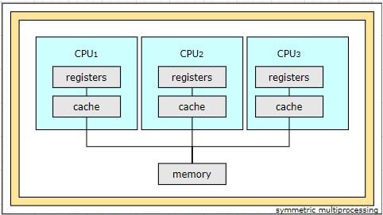
. differentiator for asymmetric/symmetric multiprocessing systems are either hardware or software. software can be written to allow only one boss and multiple workers
- terms used for reliability of computer system
. graceful degradation, ability to provide service proportional to the level of surviving hardware
. fault tolerant, hardware and software duplication to ensure continued operation despite failure
- multiprocessing can cause a system to change its memory access model
. UMA-uniform memory access, access to any RAM from any CPU takes same amount of time
. NUMA-non-uniform memory access, access to some part of RAM may takes long amount of time. OS can minimize the NUMA penalty through resource management
- multicore, including multiple computing cores in a single chip
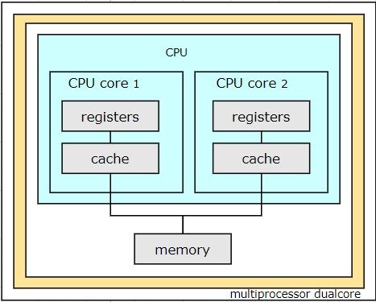
. all multicore systems are multiprocessor systems
- blade servers, multiple processor boards and I/O boards and networking boards are placed in the same chassis
. each blade processor boards boots independently and runs its own OS
= clustered systems
- composed of multiple individual systems or nodes or loosely coupled systems
- generally clustered computers share storage and are closely linked via LAN or a faster interconnect such as InfiniBand
- a layer of cluster software runs on the cluster nodes
- each nodes can monitor one or more of the others(over LAN)
- if monitored machine fails, the monitoring machine can take ownership of its storage and restart the applications that were running on the failed machine
- 2 types of clustered systems
. asymmetric clustering, one hot-standby machine will monitor the active server and in case of failure it becomes the active server
. symmetric clustering, 2 or more hosts are running applications and are monitoring each other
- application must written to take advantage of the cluster, involving the technique known as parallelization
. parallelization divides a program into separate components and run in parallel on individual computers in a cluster
. once each node solves its portion, the results from all the nodes are combined into a final solution
- other forms clusters are
. parallel clusters
. clustering over a WAN-wide area network
- parallel clusters allow multiple hosts to access the same data on shared storage
- normal OS won't support simultaneous data access by multiple hosts a special software required for achieving the same. Oracle Real Application Cluster is designed to run on a parallel cluster
- every machine runs Oracle and a layer of software tracks access to the shared disk
- to avoid conflict on data DLM-distributed lock manager is included in cluster technology
- SAN-storage area network technology allows many systems to attach to a pool of storage
- cluster software can assign the application to run on any host that is attached to the SAN
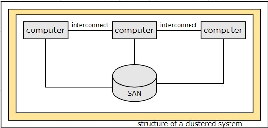
# operating-system structure
= OS provides an environment within which programs are executed
= lots of jobs will kept initially on the disk in the job pool
= job is a collection of program + input data + control instructions
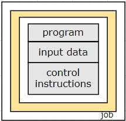
= operating system will bring subset of jobs from job pool to memory since memory is small to accommodate all the jobs
= OS picks and begins to execute one of the job
= some of the types of operating systems
- multiprogramming
- multi tasking/time-sharing
- batch
- multiprocessing
- real-time
= what is multiprogramming
- CPU will continue to execute the job until finishes (non-preemptive) or the job request for some I/O operation
- main purpose of multiprogramming is to make sure that the CPU is always busy
- CPU will have one job at a time
= what is multitaksing or time-sharing
- multitaksing or time-sharing is an extension on multiprogramming
- every job will execute only for a predefined time or CPU scheduling
- CPU will execute a job until time slice reaches (preemptive) or the job request for some I/O operation then start executing the next one
- main purpose of multitasking or time sharing is to make sure that the CPU is always busy and improved response time for every job
- CPU will have one job at a time
- OS will ensure reasonable response time through
. swapping, processes swapped in and out of memory to disk
. virtual memory, a technique that allows the execution of program that is larger than physical memory size
. file system
. disk management
. protecting resources from inappropriate use
. job synchronization and communication
. handling deadlocks
= what is multiprocessing
- multi processor(CPU) systems
- any CPU will have one job at a time
# operating-system operations
= operating systems are interrupt driven
= events are always signaled by the occurrence of an interrupt or a trap
= trap is a software generated interrupt caused by an error(divide by zero) or by a specific request from a user program
= dual-mode and multimode operation
- a system should distinguish between the execution of operating system code and user defined code
- most popular approach is to provide hardware support
- 2 separate modes of operations are
. kernel mode (also called supervisor mode, system mode, privileged mode), 0 the mode bit
. user mode, 1 the mode bit
- a bit(mode bit) is added to the hardware to indicate the mode kernel(0) or user(1)
- with the mode bit we can distinguish between a task that is executed on behalf of the operating system or the user
- when a computer system is executing on behalf of the user application the system is in user mode
- user application requests a service from the operating system via a system call the system will transition to kernel mode
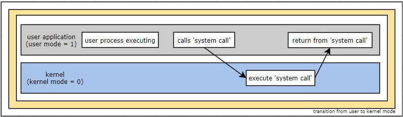
- privileged machine instructions, those machine instructions that may cause harm to OS
- dual-mode, only 2 modes(user mode and kernel mode). privileged machine instructions can execute only on kernel mode else treat it as illegal if on user mode. eg, controlling I/O devices
- multi-mode, more than 2 modes(CPU uses more than one bit). Intel 64 family of CPUs supports four privilege levels
= timer
- timer set to interrupt the CPU after a specified period of time
- period may be fixed(1/60 seconds) or variable value, simple technique is to initialize a counter with the amount of time that a program is allowed to run
- implementation by a fixed clock and a counter
- every time clock ticks the counter is decremented
- when the counter reaches 0 the interrupt occurs
- timer prevent a user program from running too long
# process management
= a program in execution is process or run time picture of a program is the process
= a process needs certain resources (CPU time, memory, files and I/O devices) to accomplish its task
= two type of processes are
- single threaded process has one program counter(PC)
- multi thread processes has multiple PCs
= process is a unit of work in a system, like centimeter is the unit of height
= OS is responsible for
- scheduling processes and threads on the CPU
- creating and deleting system and user processes
- suspending and resuming processes
- providing mechanisms for process synchronization and communication
# memory management
= main memory is a large array of bytes, each byte having its own address
= main memory is generally the only large storage device that the CPU is able to address and access directly
= CPU reads instructions from main memory during the instruction-fetch cycle
= CPU reads and writes data from main memory during the data-fetch cycle
= OS is responsible for
- keep track of which part of memory is currently being used and who is using them
- deciding which (part of) processes and data to move in and out of memory
- allocation and deallocating memory space as needed
# storage management
= provides a uniform, logical view of information storage
= defines a logical storage unit called 'file'
= maps these files onto physical media
= file-system management
- OS is responsible for
. creating and deleting files
. creating and deleting directories to organize files
. supporting the manipulation of files and directories
. mapping files onto secondary storage
. backing up files on stable storage media
= mass-storage management
- because main memory is small and volatile the computer system must provide secondary storage
- OS is responsible for
. free space management
. storage allocation
. disk scheduling
= caching
- information is normally kept in some storage system(such as main memory)
- the required information will take directly from cache, if its not available we use the information from the source putting a copy in to the cache
- performance of various levels of storage
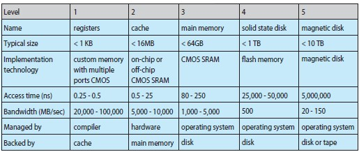
. migration of integer A from disk to register
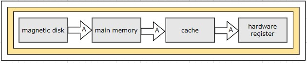
= I/O systems
- managing and hiding the peculiarities of specific hardware devices through I/O subsystem
- I/O subsystem consists of
. memory management components including buffering, caching and spooling
. general device-driver interface
. device-driver for specific hardware devices
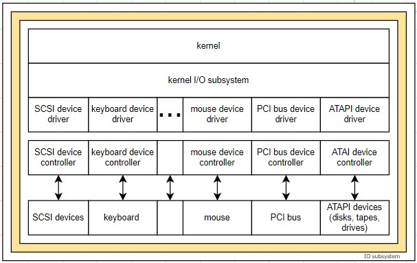
# protection and security
= a computer with multiple users and executing multiple process, then access to data needs to be regulated
= protection is any mechanism for controlling the access of processes or users of the resources defined by a computer system
# computing environments
= traditional computing
= mobile computing
= distributed systems
= client server computing
= peer-to-peer computing
= virtualization
= cloud computing
= real time embedded systems
operating-system structures
# operating-system service
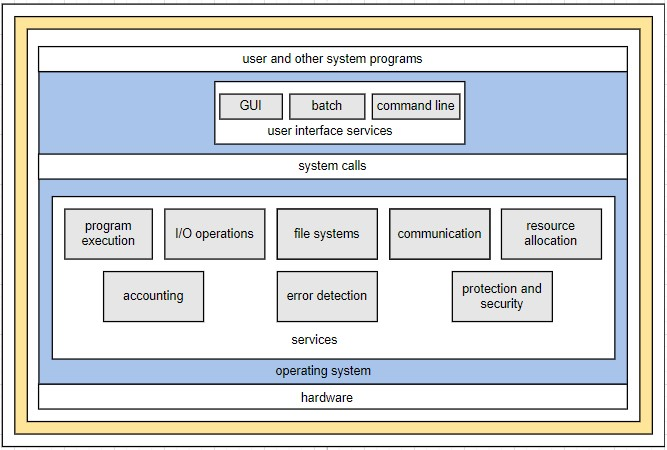
= services provides functions that are helpful for the users
- user interface
. command line interface(CLI)
* command interpreter
* uses text commands
* method for entering the commands (keyboard)
. batch interface
* commands and directives to control these commands are entered into files
* execute these files
. graphical user interface(GUI)
* a window for selecting from menu
* keyboard for entering the text
- program execution
. load the program to memory and execute
- I/O operation
. user can't control I/O directly due to efficiency and protection
. running program requires I/O
- file-system manipulation
. running program needs to read and write files and directories
- communication
. one process needs to pass information with another process on same machine or another machine that may connected together by a computer network
. communication may be implemented through shared memory or message passing
- error detection
. error may occur in the CPU, memory hardware, I/O device, user program
. OS needs to take appropriate action like halting error-causing process or halt the system
= services provides functions that are helpful for the efficient operation of the system
- resource allocation
. resource should be allocated to every user and every process running in OS
- accounting
. keep track of which users use how much and what resources
- protection and security
. owners of the information which is stored in a multiuser or a computer networked environment needs to control the use of that information
# user and operating-system interface
= command interpreter or CLI
- through CLI users can interface with OS
- some OS include command interpreter in kernel
- windows and UNIX treat the command interpreter as a special program
- interpreter known as shells
- UNIX have bourne shell, c shell, bourne-again shell, korn shell
- main function of the shell is to execute the user specified commands
- these commands are implements in 2 different ways
. bundle the command code along with command interpreter
. command code as system programs(UNIX implemented). in unix 'rm file.txt', search and execute the file named 'rm' and 'file.txt' as the parameter
- historically Mac OS has not provided a command line interface, however in the later releases both CLI and GUI are bundled
= graphical user interface(GUI)
- through GUI users can interface with OS
- its have a user friendly interface mouse based window-and-menu system characterized by a desktop metaphor
- GUI first appeared in Xerox Alto computer in 1973
- popularized through apple macintosh from 1980
- microsoft windows 1.0 was based on the addition of a GUI interface to the MS-DOS OS
- unix includes common desktop environment (CDE), X-windows systems, KDE, GNOME
- apple includes Aqua with Max OS x
= mobile and tablet devices implemented 'gestures' on touch screen for the interaction with OS like pressing, swiping fingers across the screen
# system calls
= system call provide an interface to the services made available by operating system
= these calls generally available as routines in c, c++
= but certain low level tasks are written in assembly language instructions
= list of system calls for reading a file contents and write to another file
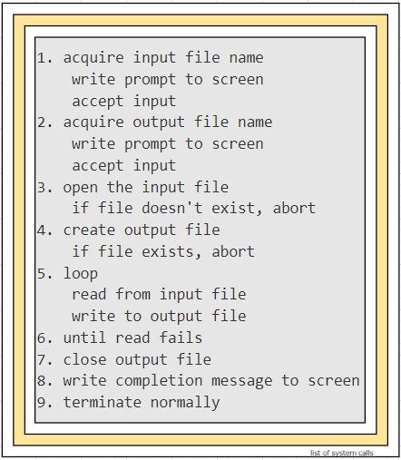
= even a simple program will make heavy use of OS and systems will execute 1000nds of system calls per second
= application programmer design programs according to the application programming interface(API)
= difference between API and system call
- API helps to exchange data between various systems, devices and applications
- system call allows a program to access services from the kernel of the operation system
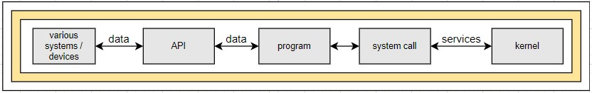
- behind the scene the functions that make up an API typically invoke the actual system calls on behalf of the application programmer
- most common APIs are
. Windows API
. POSIX API for POSIX based systems(UNIX, Linux, and Mac OS X)
. Java API runs on JVMs
- programmer access the API via library of code provided by OS. incase of Unix and Linux the library called 'libc'
- each OS has its own name for each system call
- why application programmer prefer programming according to API
. program portability(programs using API suppose to be break free even on different architecture machines)
= exercise, get the list of system calls in windows, linux, mac and unix ?
# types of system calls
= process control
= file manipulation
= device manipulation
= information maintenance
= communications
= protection
# system programs
= provide a convenient environment for program development and execution
# operating-system debugging
= debugging is the activity of finding and fixing errors and bugs(performance problems) both in hardware and software
= when process fails,
- error information will be written to a file, log file
- memory of the process will be written to a file, core dump. memory is referred to as 'core' in early days
= a failure in kernel is called crash. when crash occurs,
- error information is saved to a file, log file
- memory state will be written to a file, crash dump
= dumps can be probed by a debugger
= performance tuning, to improve performance by removing processing bottlenecks
= to identify bottlenecks
- we need to monitor system performance
- we need to have a methods of computing and displaying measures of system behavior
= solaris 10 new generation kernel enabled performance analysis tool, DTrace, dynamic tracing facility
= DTrace will dynamically adds probes to a running user processes and in the kernel
# operating-system generation
= in order to design to run at variety of sites with a variety of peripheral configurations 'sysgen' program is executed
= this 'sysgen' program reads from a given file
= given file will have all the component details
- what CPU is to be used
- how will the boot disk tbe formatted
- how many memory is available
- what devices are available
- what OS options are desired(how many buffers and of what size, CPU-scheduling algorithm, max number of processes to be supported)
= with these data, OS is then completely recompiled and can implement an OS specifically for a site
# system boot
= the procedure of loading the kernel into memory is known as booting
= a small piece of code known as bootstrap program
- runs diagnostics to determine the state of the machine
- initialize all aspects of the system(from CPU registers to device controllers)
- locates the kernel
- loads the kernel to memory
- starts execution
= the bootstrap program will be on ROM and its called 'firmware'
= firmware, because its characteristics fall somewhere between those of hardware and those of software
= GRUB is an example of an open-source bootstrap program for linux systems
= a disk that has a boot partition is called boot disk or system disk
processes
# process concept
- process is program in execution or runtime picture of a program
- process can be called a job or a task
- process contains following sections
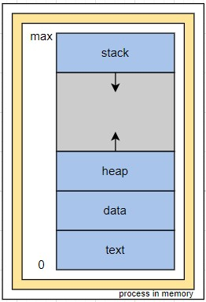
. text section : code and value of processor's registers
. data section : global variables
. heap section : area for dynamic allocation
. stack section : temporary data area(function parameter, return address and local variables)
- a program become process when the program loaded in to memory
- 2 common techniques for loading executable files to memory
. double clicking an icon representing the executable file
. entering the name of the executable file on CLI
# process scheduling
# operations on processes
# interprocess communication
# examples of ipc system
# communication in client–server systems
# summary
threads
overview
multicore programming
multithreading models
thread libraries
implicit threading
threading issues
operating-system examples
summary
process synchronization
background
the critical-section problem
peterson’s solution
synchronization hardware
mutex locks
semaphores
classic problems of synchronization
monitors
synchronization examples
alternative approaches
summary
cpu scheduling
basic concepts
scheduling criteria
scheduling algorithms
thread scheduling
multiple-processor scheduling
real-time cpu scheduling
operating-system examples
algorithm evaluation
summary
deadlocks
system model
deadlock characterization
methods for handling deadlocks
deadlock prevention
deadlock avoidance
deadlock detection
recovery from deadlock
summary
part three memory management
main memory
background
swapping
contiguous memory allocation
segmentation
paging
structure of the page table
example: intel 32 and 64-bit architectures
example: arm architecture
summary
virtual memory
background
demand paging
copy-on-write
page replacement
allocation of frames
thrashing
memory-mapped files
allocating kernel memory
other considerations
operating-system examples
summary
part four storage management
mass-storage structure
overview of mass-storage structure
disk structure
disk attachment
disk scheduling
disk management
swap-space management
raid structure
stable-storage implementation
summary
file-system interface
file concept
access methods
directory and disk structure
file-system mounting
file sharing
protection
summary
file-system implementation
file-system structure
file-system implementation
directory implementation
allocation methods
free-space management
efficiency and performance
recovery
nfs
example: the wafl file system
summary
i/o systems
overview
i/o hardware
application i/o interface
kernel i/o subsystem
transforming i/o requests to hardware operations
streams
performance
summary
protection
goals of protection
principles of protection
domain of protection
access matrix
implementation of the access matrix
access control
revocation of access rights
capability-based systems
language-based protection
summary
security
the security problem
program threats
system and network threats
cryptography as a security tool
user authentication
implementing security defenses
fire walling to protect systems and networks
computer-security classifications
an example: windows 7
summary
virtual machines
overview
history
benefits and features
building blocks
types of virtual machines and their implementations
virtualization and operating-system components
examples
summary
distributed systems
advantages of distributed systems
types of network based operating systems
network structure
communication structure
communication protocols
an example: tcp/ip
robustness
design issues
distributed file systems
summary